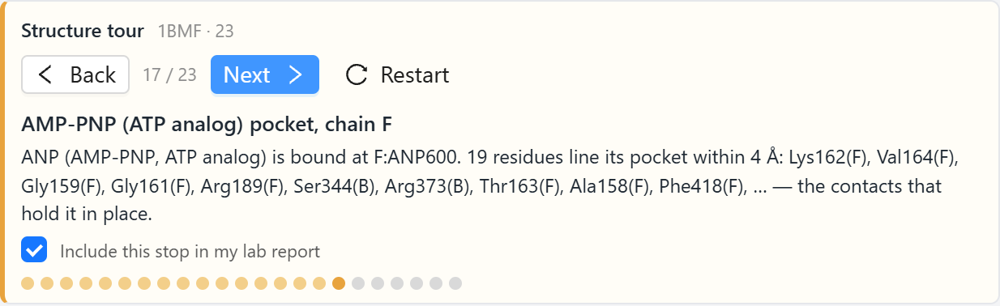
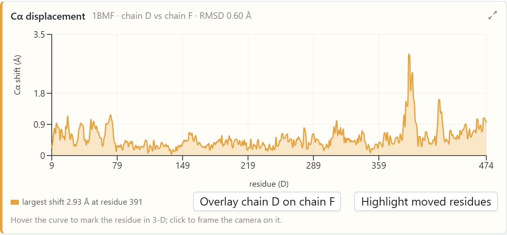
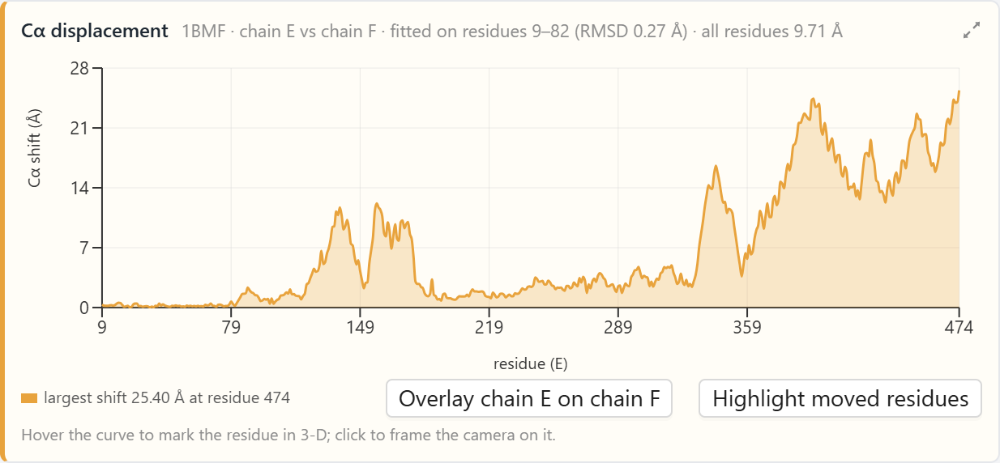
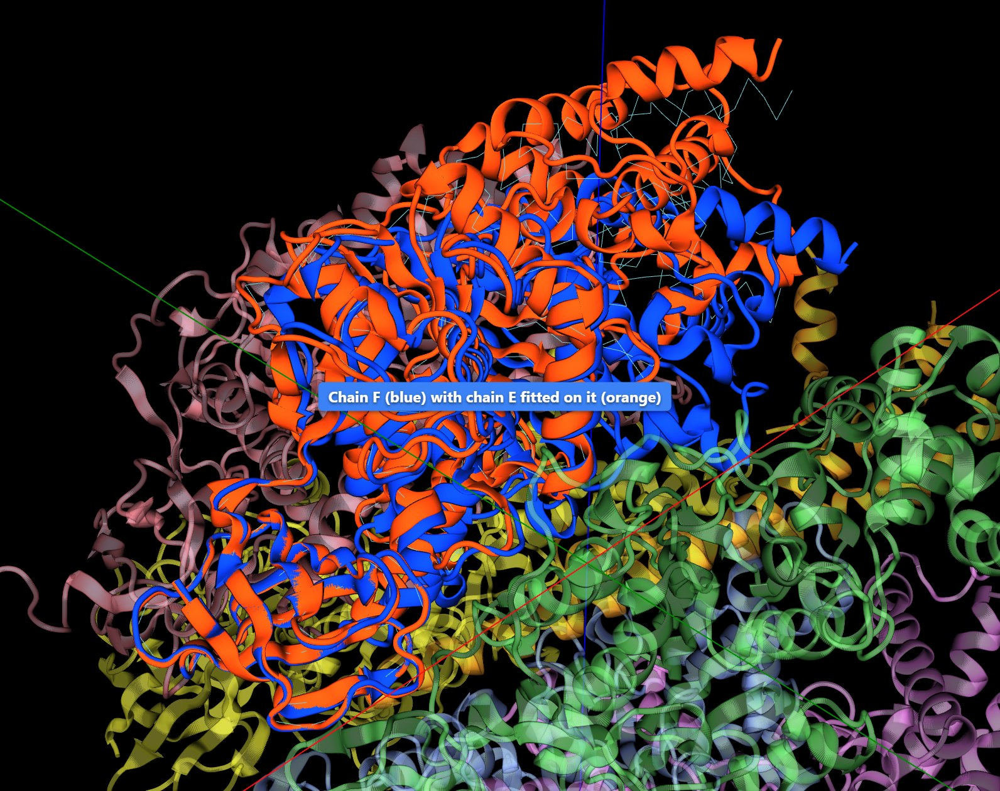

The Rotary Motor of ATP Synthase
One crystal structure holds three copies of the same subunit in three states. An AI agent in the Protein Lab of AIMS compares the three copies and finds how each one touches the shaft at the center.
Cells store energy in a small molecule called ATP. Most of the ATP in a cell is made by one enzyme, ATP synthase, which joins ADP and phosphate. In animal cells the enzyme sits in the inner membrane of the mitochondria. Mitchell proposed in 1961 that a difference in the concentration of protons across this membrane supplies the energy for making ATP, and he received the 1978 Nobel Prize in Chemistry for the idea. The enzyme has two parts. The part called Fo lies in the membrane, and protons flow through it. The part called F1 lies outside the membrane and holds the sites where ATP is made.
Boyer proposed, before any structure of the enzyme was known, that F1 has three such sites, that each site passes through three states in turn, and that a subunit at the center of F1 rotates and drives the changes. In 1994 Abrahams, Leslie, Lutter, and Walker determined the crystal structure of F1 from the mitochondria of bovine heart. The structure showed three copies of the same subunit in three different states around a central shaft. Boyer and Walker received half of the 1997 Nobel Prize in Chemistry for this work. In the same year Noji, Yasuda, Yoshida, and Kinosita attached a fluorescent filament to the central subunit of F1 from a bacterium and watched the filament turn under a microscope when they supplied ATP.
This article follows The Rotary Motor of ATP Synthase example in the Protein Lab of AIMS, in which an AI agent answers five questions about the structure of Abrahams and coworkers. The answers show what each subunit holds, how the three copies differ in shape, and which residues of each copy touch the shaft.
F1-ATPase from bovine heart mitochondria (PDB 1BMF), with each of its seven chains in its own color. Press Next on the Structure Tour card in the chat to walk through the structure.
Seven Chains
Try It
Go to AIMS and open the list of examples, with the lightbulb button on the toolbar or the Examples item in the main menu (☰). Open The Rotary Motor of ATP Synthase. Examples belong to their author, so sign in and save your own copy with Save Project As in the Project menu. Then open the chat and type the prompts below. The chat in the example already holds the answers to these prompts, which the sections below describe.
- The tour — “Give me a tour of this protein.”
- The annotations — “What does UniProt say about it? Annotate the structure.”
- The bound groups — “What is bound to each of the six large subunits?”
- The three copies — “Chains D, E and F are three copies of the same β subunit. Compare chains D and E with chain F. How does the empty subunit differ, and what does that say about how the enzyme works?”
- The shaft — “How does the shaft, chain G, touch each of the three β subunits?”
A protein is a chain of amino acids, and each amino acid in the chain is called a residue. Many proteins are built from several chains, and each chain is then called a subunit. The structure file of F1, entry 1BMF in the Protein Data Bank, has seven chains with 2,987 residues. Its resolution is 2.85 Å, which is the size of the smallest detail that the X-ray measurement can separate. The first prompt asks the agent for a tour of the structure, and the tour has 23 stops.
The second prompt asks what the UniProt database records. The seven chains map to three UniProt entries, so the file holds three kinds of subunit. F1 has two more small subunits, called δ and ε, which this crystal structure does not show. Chains A, B, and C are copies of the α subunit. Chains D, E, and F are copies of the β subunit, which UniProt names the catalytic subunit. Chain G is the γ subunit. The α and β subunits alternate around a ring, and chain G runs through the middle of the ring.
The crystal structure shows part of each chain. It shows residues 9 to 474 or 475 of the three β subunits, and it shows 122 residues of chain G in three pieces: residues 1 to 44, 77 to 90, and 209 to 272. A helix is a stretch of the chain that is wound into a spiral. The tour reports 120 helices in the seven chains, and it stops at the longest ones. The longest helix of the whole structure is in chain G, at residues 222 to 270, and the second longest is also in chain G. These two helices form the shaft.
What Each Subunit Holds
The third prompt asks what is bound to each of the six large subunits. The agent lists every group in the file that is not part of a protein chain, with the chain that holds it.
| Subunit | Bound group |
|---|---|
| α, chain A | AMP-PNP and a magnesium ion |
| α, chain B | AMP-PNP and a magnesium ion |
| α, chain C | AMP-PNP and a magnesium ion |
| β, chain D | ADP and a magnesium ion |
| β, chain E | Nothing |
| β, chain F | AMP-PNP and a magnesium ion |
AMP-PNP is a molecule that resembles ATP. In AMP-PNP a nitrogen atom replaces the oxygen atom between the last two phosphates. The enzyme binds AMP-PNP as it binds ATP and does not split it, so AMP-PNP marks a site that would hold ATP. The crystal was grown in a solution that contained AMP-PNP and ADP. The three α subunits all hold AMP-PNP. The three β subunits differ: chain F holds AMP-PNP, chain D holds ADP, and chain E holds nothing. The same subunit appears in the crystal in three states.
The tour has a stop for the site of chain F. The stop lists the residues that have an atom within 4 Å of the AMP-PNP. There are 19 of them, and the stop names the ten closest: Lys162, Val164, Gly159, Gly161, Arg189, Ser344, Arg373, Thr163, Ala158, and Phe418. Ser344 and Arg373 belong to chain B, an α subunit, and the other eight belong to chain F. The site where ATP is made lies at the boundary between a β subunit and the α subunit next to it. The stop for the ADP of chain D shows the same arrangement, with Arg373 and Ser372 of chain C among its residues.

Two Closed Subunits and One Open Subunit
The fourth prompt asks the agent to compare chains D and E with chain F. The agent pairs the residues of two chains by their numbers and moves one chain as a rigid body until it lies on the other as closely as possible. It then measures the distance between the two members of each pair. The measurement uses one atom of each residue, the α-carbon. Every residue has one α-carbon, and the α-carbons follow the path of the chain. The summary of the distances is the root-mean-square deviation, or RMSD: the square root of the average of the squared distances.
Chain D, which holds ADP, has nearly the shape of chain F, which holds AMP-PNP. The RMSD over 466 residues is 0.6 Å, and the largest distance for a single residue is 2.9 Å. Chain E, the empty subunit, has an RMSD of 3.8 Å from chain F.
A fit over the whole chain spreads the difference over all the residues. To find the part that moved, the agent fits chain E onto chain F a second time and uses only residues 9 to 82, which form a small domain at the start of the chain. A domain is a part of a chain that folds into a compact unit of its own. These 74 residues of the two chains then agree to 0.27 Å. The distance grows along the rest of the chain. Residues 120 to 183 are displaced by 7.1 Å on average. Residues 292 to 474 are displaced by 13.1 Å on average, and the last residue, 474, by 25.4 Å. The agent posts each comparison as a card that plots the distance for every residue.


Each card has a button that overlays one chain on the other in the 3-D view. For the second card, the button draws chain F in blue and chain E in orange, placed on chain F by the fit over residues 9 to 82, and it dims the rest of the structure. The two drawings coincide in the small domain. They separate over the rest of the chain, and the far end of the orange chain lies far from the blue chain. A thin moving line then plays the change from one shape to the other. The line moves each α-carbon along a straight path between its two positions, which shows the parts that differ and the size of the difference.

The literature on this enzyme calls chains D and F closed and chain E open. The last residue of a chain is called its C-terminal end. In a closed subunit, residues of the C-terminal part of the chain, such as Phe418, are within 4 Å of the bound group. In the open subunit, the same part has swung outward and the site is empty.
How the Shaft Touches Each Subunit
The fifth prompt asks how chain G touches each of the three β subunits. The agent counts the pairs of atoms, one from each chain, that are within 4 Å of each other, and it lists the residues those atoms belong to. The structure file has no hydrogen atoms, so the count uses every atom of the two chains.
| β subunit | Bound group | Residues touching chain G | Atom pairs |
|---|---|---|---|
| Chain D | ADP | 12 | 47 |
| Chain E | Nothing | 12 | 55 |
| Chain F | AMP-PNP | 8 | 37 |
The three counts are of similar size. Ile275, Ile390, and Leu391 touch the shaft in all three subunits, and the other residues differ. Residues 394 to 400 of the β subunit have the sequence Asp-Glu-Leu-Ser-Glu-Glu-Asp, and the stretch is known by its one-letter spelling, DELSEED. Chain F touches the shaft with three residues of this stretch, Asp394, Glu395, and Glu398. Chain D touches the shaft with Glu395. Chain E touches the shaft with no residue of the stretch. Chain E is the only one of the three that touches the shaft with residues between 314 and 320: Ala314, Asp316, Thr318, Asp319, and Pro320.
Both stretches lie in residues 292 to 474, the part of the chain that differs most between the open subunit and the closed subunits. The swing changes which residues of this part reach the shaft: the DELSEED stretch in the two closed subunits, and residues 314 to 320 in the open subunit. The shaft is a single chain without threefold symmetry, so each β subunit faces a different side of the shaft.
From Three States to Rotation
The crystal holds the shaft in one orientation, and each β subunit is in one state. The mechanism that Boyer proposed connects the three states through rotation. When the shaft turns by one third of a turn, each β subunit faces the side of the shaft that its neighbor faced before, and the subunit takes the state that its neighbor had. After one full turn, each of the three sites has passed through all three states and has made one ATP, so one turn makes three ATP. In the whole enzyme, the flow of protons through Fo turns the shaft. F1 alone works in the reverse direction: it splits ATP, and the splitting turns the shaft, which is what Noji and coworkers observed.
The example shows the three states and measures the differences between them. It shows that the open subunit and the closed subunits touch the shaft with different residues. The rotation moves the whole assembly of 2,987 residues and is far slower than the motions that a simulation in AIMS can follow, so the example ends with the structure.
Conclusion
What the Agent Produced
The agent was given the structure file 1BMF and five questions. The results below came from its analysis of the file and of the UniProt entries:
- The subunits — seven chains of three kinds: three α, three β, and one γ, with the two longest helices of the structure in the γ subunit.
- The bound groups — AMP-PNP in chain F, ADP in chain D, nothing in chain E, and residues of the neighboring α subunit in the sites of chains D and F.
- The shapes — chains D and F agree to 0.6 Å, and residues 292 to 474 of chain E are displaced by 13.1 Å on average.
- The shaft — chains D and F touch chain G with residues of the DELSEED stretch, and chain E touches it with residues 314 to 320.
This article uses ATP synthase to illustrate a new way to learn science: students converse with an AI agent that turns a plain-language question into an analysis of a protein structure and hands back measured data. The textbook statement that the three catalytic sites of ATP synthase are in three states becomes something students measure for themselves, from the list of what each subunit holds to the distance that the open subunit has moved.
Doing this analysis by hand takes several tools. A student has to read a structure file with seven chains, find the bound groups and the residues around each one, pair the residues of two chains, fit one chain onto the other, and count the contacts between the shaft and each subunit. In AIMS a student types five questions in plain language, and the agent does each analysis and posts its result in the conversation, where the student can hover over a curve, press a button, and see the two shapes of the subunit one over the other in the 3-D view. By pairing analysis tools with an AI that can choose and run them, AIMS turns a student’s curiosity into a genuine scientific investigation of how the parts of a molecular machine work together.
← Back to AIMS